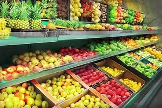

Featured Products

Fresh Organic Vegetables

Seasonal Fruits

Pure Dairy Products
Your Gateway to Fresh, Organic, and Local Produce
Fresh Organic Vegetables
Seasonal Fruits
Pure Dairy Products
Learn more about organic farming methods that promote soil health and produce fresh, chemical-free food for your family.
Learn More
Rajesh, specializing in organic vegetables

Anita, focusing on fruit farming

Vikram, dairy farmer from Rajasthan

Get fresh produce directly from farmers to your doorstep. Support local farmers and enjoy farm-fresh food!
Order Now